No. 01
Low Tide
A documentary title sequence. The tide line drowns each credit and surfaces the next.
- Skill
- motion-film
- Runtime
- 0:26
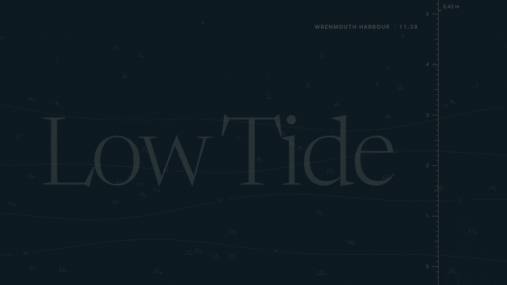
Eleven skills that turn Claude into a small film studio. Describe the video; Claude writes the concept, designs every frame, scores the music, checks it, and hands you an HTML film and an MP4.
Each skill is one SKILL.md file. Upload it once, then ask for videos in any chat.
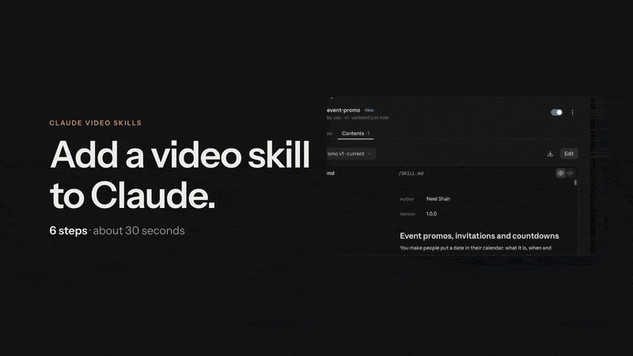
SKILL.md, then ••• › Download./ and the skill’s name, then what you want.
/event-promo 20-second promo for our Design Systems Meetup: Thu 12 Nov, 7 pm, Lisbon. Free tickets at meetup.example --motion:high
Copy a skill into your skills folder, then run it with /skill-name or just ask.
git clone https://github.com/Neelshah1810/Claude-Video-Skills
mkdir -p ~/.claude/skills
cp -R Claude-Video-Skills/event-promo ~/.claude/skills/
# then, in Claude Code:
/event-promo make a 20-second promo for …
Each film was made by Claude with one of these skills, following that skill’s own instructions. The loops are short previews; the links open the full films. All brands, people and numbers are fictional.
A documentary title sequence. The tide line drowns each credit and surfaces the next.

A launch film. Overdue invoices pile up, then flip to “Paid”, one feature per beat.
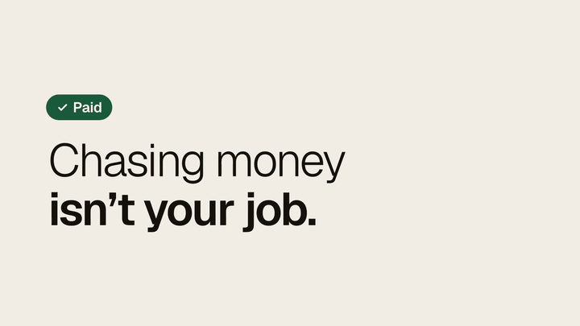
A product walkthrough. One support ticket, from arrival to resolved.
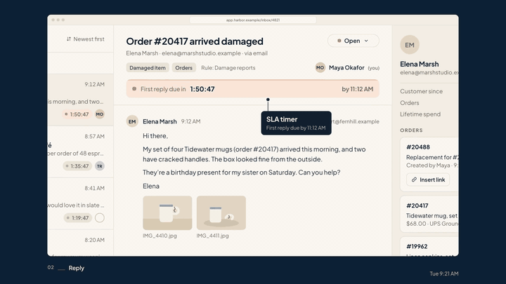
An explainer. Heat you can see, collected outside and set loose indoors.
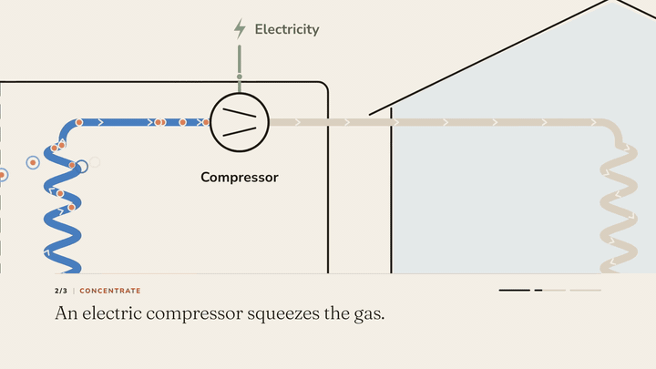
A tutorial. Turn on two-step sign-in, in four clear steps.
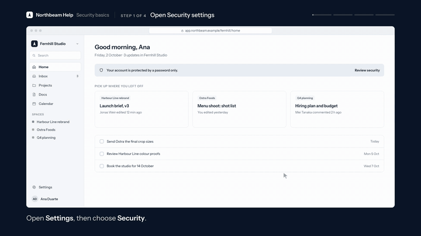
A release video. Four new features, four equal slots.
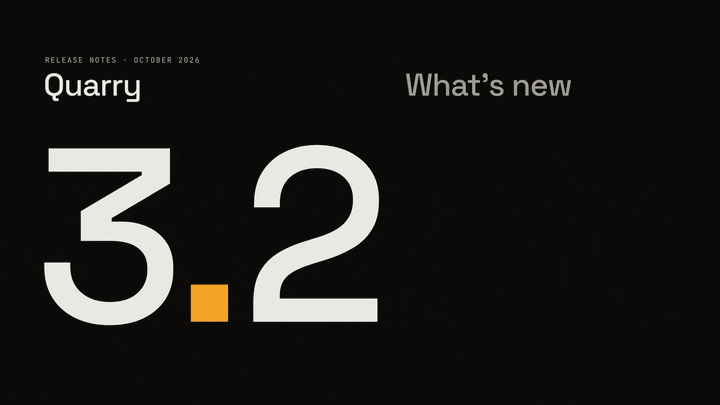
A data story. A city’s year in rides, set like a newspaper.
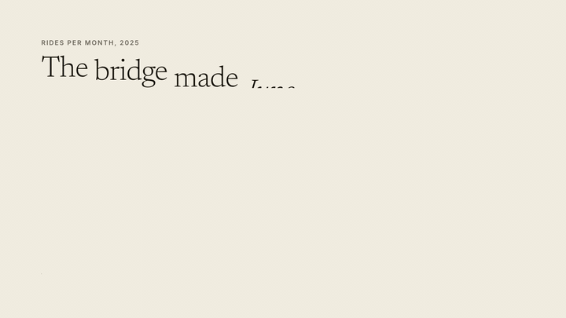
A brand manifesto. “We make chairs for the next owner.”
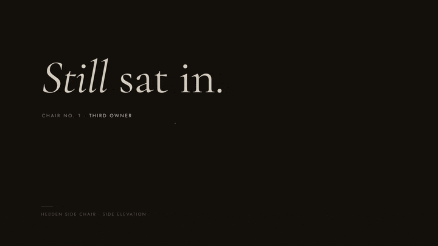
An event promo. A design conference in Lisbon, built from tiles.
A customer story. “Now I bake for the morning, not for the bin.”
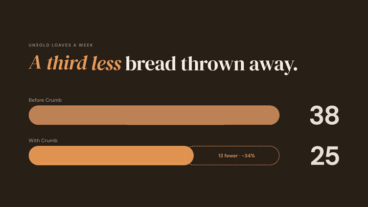
A vertical social ad. “Your plant isn’t dramatic. It’s thirsty.”
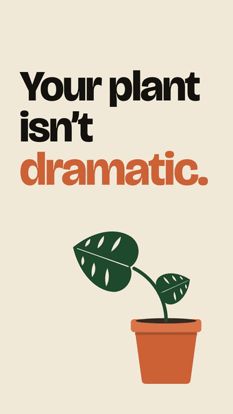
Every skill works for any brand, product or idea, with eight style presets and four creative dials.
Tune any film with --creativity, --typography, --animation and --motion (low, medium or high). Your brand guide always wins.